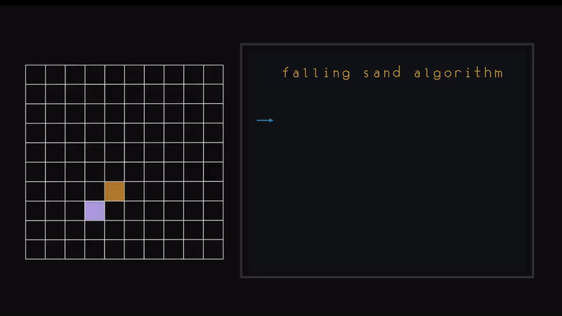
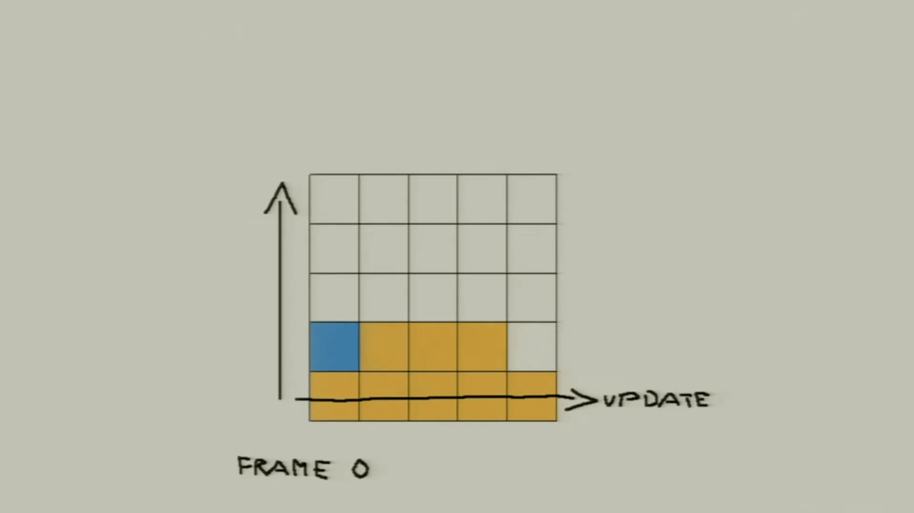
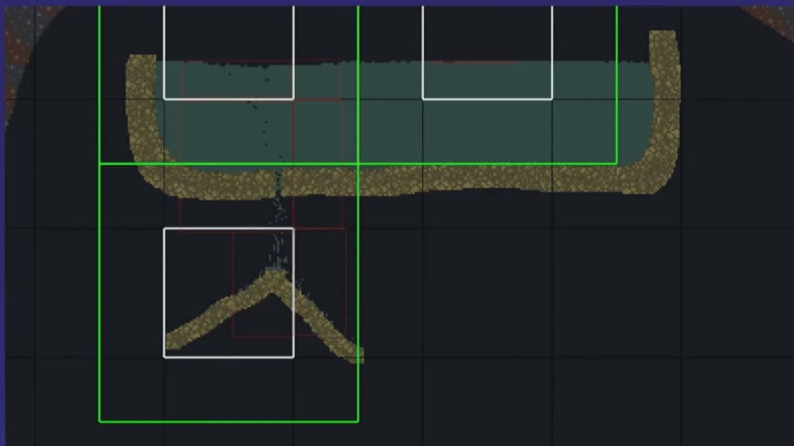

Introduction
Ever played the game Noita? I have, and I love it. In Noita, every pixel on the screen is simulated in the physics engine called the falling everything engine. It is a very impressive falling sand engine and as part of my school assignment, I was inspired to build my own falling sand engine/library.

That's how I started working on Avalanche, a production-ready falling sand physics engine designed as a single-header C++ library. The goal was to create a fast, flexible system to simulate thousands of particles on the CPU that developers could integrate into their projects with minimal friction. In Avalanche, all cell behaviors are user-definable via a clean API, allowing for easy extension and customization.
Here is a video showcasing some of the behaviors that can be simulated using the API.
Project goals
It is fun to set goals for personal projects like this. Here are the main objectives I set out to achieve:
- Performance: The engine should be capable of simulating one million particles in real-time on a standard CPU (Ryzen 5 9600x, 3.90 GHz, 6 cores, 12 threads).
- Flexibility: Users should be able to define custom cell types and behaviors easily through a clean API.
- Ease of Integration: The engine should be designed as a single-header C++ library for easy integration into existing projects.
- Determinism: The simulation should produce consistent results across runs given the same initial conditions.
- Introduction
- Project Goals
- What is a Falling Sand Simulation?
- The Naive Approach
- Improving the Simulation
- Flexibility and API Design
- Multithreading
- Simulating One Million Cells
Curious about the implementation details and if I achieved these goals? Keep reading!
Table of Contents
What is a falling sand simulation?
Falling sand simulations are a type of cellular automaton where each cell in a grid represents a particle or empty space. The simulation updates the state of each cell based on predefined rules that dictate how particles interact with each other and their environment. Common behaviors include falling due to gravity, spreading out when they hit the ground, and interacting with other particle types (e.g., water flowing around sand).

GIF by John Jackson | Recreating Noita's Sand Simulation in C and OpenGL | Game Engineering
That being said, falling sand simulations are deceptively complex. It is relatively easy to set-up a mediocre falling sand sim but there are a lot of considerations to make in order to maintain flexible and performant. You potentially need to update thousands of cells every frame, handle spatial queries efficiently, and in my case I will also ideally need to provide a clean API that doesn't get in the way.The naive approach
My first attempt was to update every cell sequentially without any chunking or whatnot, this approach had some major issues. There were big performance bottlenecks and arguably more importantly, there was non-deterministic behavior that broke the simulation because of directional biases.
Intense left-bias in first iteration of the simulation.
if (shouldUpdate)
{
for (int x = 0; x < WIDTH; x++)
{
for (int y = 0; y < HEIGHT - 1; y++)
{
UpdateCell(x, y);
}
}
}
The directional bias issue arose because I was updating cells in a fixed order (top to bottom, left to right). This meant that cells processed earlier in the update cycle had an advantage over those processed later, leading to unrealistic behavior. In this case, particles would consistently fall to the left side of the screen because they were updated before those on the right. This was really evident in the first iteration of Avalanche as you can see above.
Performance was another major concern. Updating every cell in a large grid every frame was computationally expensive, leading to low frame rates and a poor user experience. As the number of particles increased, the performance degraded significantly, making it impractical for real-time applications.
Improving the simulation
To address these issues, I took a step back and re-evaluated my approach.
Solving directional bias
After researching some other falling sand projects online, I found that most of them used two main ways to address directional bias: double buffering or randomizing the update order.
1. Randomizing the update direction order

GIF from Games Now! | Nolla Games: Making of Noita
This solution involves shuffling the order in which cells are updated each frame and processing cells one by one one immediately as they are updated. By randomizing the update sequence, no single direction consistently gets priority, leading to a more balanced and realistic simulation. This method is relatively simple to implement and can significantly reduce directional bias. However, it may introduce some variability in the simulation results because the cells are immediately processed before taking all other cells a fair chance, which might not be desirable in all scenarios. This solution is actually used in Noita's falling everything engine as shown in the GIF above, which I was surprised to learn because of the simplicity of this solution.
2. Double buffering
This solution involves keeping track of a "desired" moves buffer in addition to the main simulation grid. During each update cycle, cells determine their desired moves based on their current state and the states of neighboring cells, and write these desired moves to the buffer. Once all cells have been processed, the simulation applies the desired moves from the buffer to the main grid in a separate pass. This approach ensures that all cells are updated based on the same initial state, eliminating directional bias. It is a bit more complex to implement than randomizing the update order, but it could provide more consistent results without having to mess with the update order.
After carefully considering both options, I decided to implement the double buffering approach in Avalanche. I felt that it would provide a more robust solution to the directional bias issue while also allowing for greater control over the simulation's behavior and the other option feels more like a band aid solution that is not actually tackling the problem at hand.
void SimulationSector::_commit_cells()
{
std::sort(std::execution::par, _cellChanges.begin(), _cellChanges.end(),
[](auto& a, auto& b) { return a.first < b.first; });
size_t iprev = 0;
_cellChanges.emplace_back(-1, -1);
for (size_t i = 0; i < _cellChanges.size() - 1; i++)
{
if (_cellChanges[i].first != _cellChanges[i + 1].first)
{
size_t rand = iprev + avl::utils::get_random_value(0, (int)(i - iprev));
size_t dst = _cellChanges[rand].first;
size_t src = _cellChanges[rand].second;
_set_cell_info
(
dst,
_activeCellIDs[src],
_activeCellColors[src],
_activeCellsUserData[src]
);
_set_cell_info(src, 0, 0, 0);
iprev = i + 1;
}
}
_cellSwaps.clear();
_cellChanges.clear();
}
The code snippet above shows how I implemented the commit phase of the double buffering system in Avalanche. During the update phase, each cell's desired move is recorded in the _cellChanges vector as a pair of source and destination indices. In the commit phase, I first sort the _cellChanges vector to group all changes targeting the same destination together.
Then, I iterate through the sorted changes, and for each unique destination, I randomly select one of the source cells that want to move there. This randomness helps to further reduce any residual bias that might occur when multiple cells target the same destination. The selected cell's information is then applied to the destination, and the source cell is cleared. Finally, I clear the _cellSwaps and _cellChanges vectors to prepare for the next update cycle.
Adding a proper chunking framework
It is very wasteful to loop over all cells in a sector every frame, especially when many of them are inactive. To optimize this, I implemented a chunking system where the sector (a single grid of 500x500 cells) is divided into smaller chunks of 50x50 cells. Only active chunks are processed each frame, significantly reducing the number of cells that need to be checked. Chunks themselves don't know anything about how many cell they contain or what type of cells they are. Chunks are just containers that can be active or asleep. This significantly reduced the number of checks I needed to do per frame and improved overall performance.
for (int i = 0; i < activeChunks.size(); i++)
{
SectorChunk* chunk = activeChunks[i];
for (int x = 0; x < chunk->chunkSize; x++)
{
for (int y = 0; y < chunk->chunkSize; y++)
{
int xPos = x + chunk->chunkX;
int yPos = y + chunk->chunkY;
Cell* cell = GetCell(xPos, yPos);
// Process cell behavior here.
}
}
}Video showcasing double buffering and chunking implementation. Notice there is no directional bias anymore.
Flexibility and API Design
One of the project goals was to provide a clean and flexible API that allows users to define custom cell types and behaviors easily. This had me stumped for a while. Initially, I had one enum that defined all known cell moves and behaviors, but this quickly became unmanageable as I added more cell types and more importantly, users couldn't define their own cell types without modifying the engine code itself. This is bad because an engine like this should not make any assumptions about what kind of cells the user wants to simulate.
enum class CellMoveFlags : uint8_t
{
MOVE_DOWN = 0b00000001,
MOVE_DOWN_SIDE = 0b00000010,
MOVE_SIDE = 0b00000100,
FLOAT_UP = 0b01000000,
};
// Combining move flags using bitwise OR:
CellMoveFlags flags = CellMoveFlags::MOVE_DOWN | CellMoveFlags::MOVE_SIDE;
To solve this, I designed a more data-driven approach where users can define their own cell types and behaviors using function pointers. This is all possible with the CellUpdateContext struct. This struct is a context object passed to cell update functions, providing them with all the necessary information and utilities to perform their behavior. This allows users to create new cell types without modifying the engine code itself, making it much more flexible and extensible.
Here is an example of how a user-defined cell update function can look like:
bool UpdateSandCell(avl::CellUpdateContext& ctx)
{
const int targetY = ctx.y + 1;
if (!ctx.is_out_of_bounds(ctx.x, targetY))
{
uint8_t downCellID = 0;
if (ctx.is_empty(ctx.x, targetY, downCellID))
{
ctx.move_cell(ctx.x, targetY);
return true;
}
else if (ctx.cellID != 3 && downCellID == 3)
{
if (avl::utils::get_chance(.5f))
ctx.swap_cell(ctx.x, targetY);
else
ctx.notify_chunk();
return true;
}
}
}
In this example, the UpdateSandCell function defines the behavior of a sand cell. It checks the cell directly below it, and if that cell is empty, it moves down. If the cell below is water (cell ID 3), it swaps places with the water cell half of the time, simulating sand sinking through water. The function uses methods provided by the CellUpdateContext to interact with the simulation, such as checking for out-of-bounds conditions, determining if a cell is empty, moving cells, and swapping cells.
avl::utils::register_cell
(
4, //Cell ID.
avl::utils::pack_RGBA(1, 0.369f, 0.0f, 1.0f), //Packed cell color.
*world, //Pointer to the world.
OnUpdateFire, //Cell update function.
avl::CellUserData(HOT | SHORT_LIFE_TIME, 0).pack() //Initial user data (flags + value).
);
Registering a cell is trivial with the API. In this example, I register a fire cell with ID 4, a bright orange color, and associate it with the OnUpdateFire function. The initial user data is packed with flags indicating that the cell is hot and has a short lifetime.
This works great for simple behaviors like sand and water, but more complex behaviors require the use of the user data field that is associated with each cell. This field can store arbitrary uint32_t data defined by the user, allowing for more complex state management within cell update functions. For example, here is the fire update function which I shoved above that uses the user data system:
bool OnUpdateFire(avl::CellUpdateContext& ctx)
{
static uint32_t colors[5] =
{
avl::utils::pack_RGBA(0.612f, 0.169f, 0.067f, 1.0f),
avl::utils::pack_RGBA(1.0f, 0.416f, 0.0f, 1.0f),
avl::utils::pack_RGBA(0.498f, 0.0f, 0.0f, 1.0f),
avl::utils::pack_RGBA(1.0f, 0.592f, 0.0f, 1.0f),
avl::utils::pack_RGBA(0.498f, 0.2f, 0.0f, 1.0f)
};
ctx.notify_chunk();
ctx.notify_sector();
// Get current user data.
auto data = ctx.get_user_data();
// Update lifetime.
int randValue = avl::utils::get_random_value(0, 1);
data.value += (uint16_t)randValue;
// Determine cell lifetime based on flags.
int cellLifeTime = 75;
if (data.has_flag(CellFlags::LONG_LIFE_TIME))
cellLifeTime = 150;
else if (data.has_flag(CellFlags::SHORT_LIFE_TIME))
cellLifeTime = 40;
// Randomly change color.
if (randValue == 0 && avl::utils::get_chance(0.5f))
ctx.sector->_activeCellColors[ctx.cellIndex] = colors[avl::utils::get_random_value(0, 4)];
// Check if fire should go out.
if (data.value == cellLifeTime)
{
if (!avl::utils::get_chance(.9f))
ctx.world->plot_cell(ctx.x + ctx.sector->worldX, ctx.y + ctx.sector->worldY, 6); // Spawn smoke.
else
ctx.world->plot_cell(ctx.x + ctx.sector->worldX, ctx.y + ctx.sector->worldY, 0); // Go out.
data.value = 0;
data.clear_all_flags();
ctx.set_user_data(data);
return false;
}
ctx.set_user_data(data);
// Movement logic.
if (!data.has_flag(CellFlags::LONG_LIFE_TIME) && !data.has_flag(CellFlags::IMMOVABLE))
{
if (!FloatUp(ctx, 2))
return MoveSide(ctx);
}
return true;
}
In this example, the OnUpdateFire function defines the behavior of a fire cell. It uses the user data field to track the fire's lifetime and determine when it should go out. The function also changes the fire's color randomly and allows it to spread to neighboring cells. The use of flags in the user data field enables different fire behaviors, such as long or short lifetimes and immovability. Because every cell has its own user data field, multiple fire cells can exist simultaneously with independent states and behaviors and the flag FLAMMABLE can be added to other cell types to allow them to catch fire when adjacent to a fire cell.
If you look at this fire implementation, you might notice that there is no logic yet that actually sets other cells aflame. That's exactly the use case for the global CellPostProcessor update callback, this callback can be used when you want to perform some logic not based on a specific cell ID but rather on any cell with a specific user data flag or certain properties. This callback is called for every active cell in the simulation after all individual cell update functions have been called. This allows for global behaviors like fire spreading to adjacent flammable cells, regardless of their specific cell ID.
void UpdateFireSpread(avl::CellUpdateContext& ctx, avl::CellUserData data)
{
if (data.has_flag(CellFlags::FLAMMABLE)) // Fire spread implementation.
{
avl::Vector2Int upIndex = { ctx.x, ctx.y - 1 };
avl::Vector2Int downIndex = { ctx.x, ctx.y + 1 };
avl::Vector2Int leftIndex = { ctx.x - 1, ctx.y };
avl::Vector2Int rightIndex = { ctx.x + 1, ctx.y };
// Check if any neighbor has the HOT flag.
bool up = !ctx.is_out_of_bounds(upIndex.x, upIndex.y) &&
ctx.get_user_data(upIndex.x, upIndex.y).has_flag(CellFlags::HOT);
bool down = !ctx.is_out_of_bounds(downIndex.x, downIndex.y) &&
ctx.get_user_data(downIndex.x, downIndex.y).has_flag(CellFlags::HOT);
bool left = !ctx.is_out_of_bounds(leftIndex.x, leftIndex.y) &&
ctx.get_user_data(leftIndex.x, leftIndex.y).has_flag(CellFlags::HOT);
bool right = !ctx.is_out_of_bounds(rightIndex.x, rightIndex.y) &&
ctx.get_user_data(rightIndex.x, rightIndex.y).has_flag(CellFlags::HOT);
if (up || down || left || right)
{
// Increment lifetime.
data.value += (uint16_t)avl::utils::get_random_value(0, 2);
// Force keep the chunks and this sector active to prevent fire from going out too quickly.
avl::SectorSimulationChunk** chunkBuffer = nullptr;
if (ctx.get_chunk_safe(upIndex.x, upIndex.y, chunkBuffer))
ctx.notify_chunk(chunkBuffer[0]);
if (ctx.get_chunk_safe(downIndex.x, downIndex.y, chunkBuffer))
ctx.notify_chunk(chunkBuffer[0]);
if (ctx.get_chunk_safe(leftIndex.x, leftIndex.y, chunkBuffer))
ctx.notify_chunk(chunkBuffer[0]);
if (ctx.get_chunk_safe(rightIndex.x, rightIndex.y, chunkBuffer))
ctx.notify_chunk(chunkBuffer[0]);
ctx.notify_chunk();
ctx.notify_sector();
if (data.value == FIRE_SPREAD_TIME)
{
data.value = 0;
data.clear_flag(CellFlags::FLAMMABLE);
if (ctx.get_cell_id(upIndex.x, upIndex.y) == 0)
{
data.set_flag(CellFlags::HOT);
ctx.set_user_data(data);
ctx.world->plot_cell(ctx.x + ctx.sector->worldX, ctx.y + ctx.sector->worldY, 4);
}
}
else if (data.value > FIRE_LIFETIME) // Reset if taking too long.
{
data.value = 0;
ctx.set_user_data(data);
}
else
{
// Save updated lifetime.
ctx.set_user_data(data);
}
}
}
In this example, the UpdateFireSpread function checks if a cell is flammable and has any neighboring cells that are hot (on fire). If so, it increments the cell's lifetime counter. Once the counter reaches a certain threshold, the cell catches fire by plotting a new fire cell at its location. The function also ensures that the relevant chunks and sectors remain active to prevent the fire from going out too quickly. This global update mechanism allows for dynamic interactions between different cell types based on their properties rather than their specific IDs.
world->set_cell_post_processor(UpdateFireSpread);
That is how fire is implemented in Avalanche! There are many more cell types and behaviors implemented in the demo project, but I won't go into all of them here.
Here is a video showcasing the fire spread behavior in action:
Multithreading
To get even more performance out of the engine, I need to multi-thread the update process. This was quite hard to get right because of the double buffering system. Since the cellMoves buffer is shared between all threads, I needed to make sure that multiple threads could write to it safely without causing race conditions or data corruption. I started doing research to see what other people had done in similar situations in falling sand engines. I watched a GDC talk by Petri Purho called Exploring the Tech and Design of Noita where he talked about how they implemented multithreading in their falling sand engine.
1. Checkerboard updating pattern

GIF from GDC Festival of Gaming | Exploring the Tech and Design of Noita
In this approach, the simulation grid is divided into a checkerboard pattern, where cells are grouped into two sets based on their coordinates (even and odd). During each update cycle, one set of cells is processed while the other set remains static. This allows for safe parallel processing since cells in one set do not directly interact with cells in the other set during the same update. By alternating between the two sets in subsequent updates, the entire grid can be updated over time without introducing race conditions. This is the method used in Noita's falling everything engine as shown in the GIF above.
2. Row-based updating pattern

GIF from MARF | How To Code a Falling Sand Simulation (like Noita) with Cellular Automata
This is another similar approach where the simulation grid is divided into horizontal rows. During each update cycle, rows are processed in parallel, with each thread handling a separate row. To prevent race conditions, the update order is staggered such that adjacent rows are not processed simultaneously. For example, in one update cycle, even-numbered rows are processed first, followed by odd-numbered rows in the next cycle. This ensures that cells in one row do not directly interact with cells in adjacent rows during the same update, allowing for safe parallel processing. This method is illustrated in the GIF above.
After considering both options, I decided to implement the checkerboard updating pattern in my project. I felt that it would provide a more robust solution to the multithreading issue while also allowing for greater control over the simulation's behavior and since I already have a proper chunking framework in place, it was relatively easy to implement.
void SimulationSector::_update()
{
std::vector oddChunks;
std::vector evenChunks;
for (int i = 0; i < _allChunks.size(); i++) // Fill odd and even chunk buffers.
{
if (!_allChunks[i]->isSleeping)
{
SectorSimulationChunk* chunk = _allChunks[i];
int chunkIndexX = chunk->chunkX / 50;
int chunkIndexY = chunk->chunkY / 50;
if ((chunkIndexX + chunkIndexY) % 2 == 0)
evenChunks.push_back(chunk);
else
oddChunks.push_back(chunk);
}
}
// Only use multiple threads if there are enough chunks to make it worthwhile.
static const int MIN_CHUNKS_FOR_THREADING = 4;
// Begin processing odd chunks, only process in parallel if there are enough chunks.
if (oddChunks.size() >= MIN_CHUNKS_FOR_THREADING)
{
_process_chunks(oddChunks);
_commit_cells();
}
else if (!oddChunks.empty())
{
_process_chunks_sigle_threaded(oddChunks);
_commit_cells();
}
// Begin processing even chunks, only process in parallel if there are enough chunks.
if (evenChunks.size() >= MIN_CHUNKS_FOR_THREADING)
{
_process_chunks(evenChunks);
_commit_cells();
}
else if (!evenChunks.empty())
{
_process_chunks_sigle_threaded(evenChunks);
_commit_cells();
}
} One thing that I wanted to avoid was having to lock the cellMoves buffer during the update process using mutexes. Locking can introduce significant overhead and negate the benefits of multithreading, especially in a performance-critical application like a falling sand engine. To avoid this, I decided to allocate separate cellMoves buffers for each thread. This way, each thread can write to its own buffer without needing to lock anything, allowing for safe and efficient parallel processing. After all threads have completed their updates, the individual buffers are merged into the main cellMoves buffer in a single-threaded commit phase. This approach maximizes performance while still ensuring that all cell updates are applied correctly.
std::vector<std::vector<std::pair<int, int>>> _threadCellChanges;Each thread can use its own buffer to record cell changes, avoiding the need for mutex locks during parallel processing.
When a thread wants to record a cell change, it simply appends the change to its own buffer. During the commit phase, all thread-specific buffers are merged into the main cellMoves buffer in a single-threaded context, ensuring that all changes are applied correctly without any race conditions.
// Merge cell changes.
for (int i = 0; i < _numThreads; i++)
{
if (!_threadCellChanges[i].empty())
{
_cellChanges.insert(_cellChanges.end(),
std::make_move_iterator(_threadCellChanges[i].begin()),
std::make_move_iterator(_threadCellChanges[i].end()));
}
}
// Merge cell swaps.
for (int i = 0; i < _numThreads; i++)
{
if (!_threadCellSwaps[i].empty())
{
_cellSwaps.insert(_cellSwaps.end(),
std::make_move_iterator(_threadCellSwaps[i].begin()),
std::make_move_iterator(_threadCellSwaps[i].end()));
}
}After all this hard work, I was finally able to achieve real-time performance with Avalanche while simulating a large number of cells. I quickly ran my stress test demo, which places 50 cells per second going across the screen for 6000 units. And it held up remarkably well, maintaining smooth performance throughout.
The single threaded version had an average time step of 11ms with the .1% lows hitting 21ms and the new multithreaded version scored an average time step of 4ms! with the .1% lows hitting 5ms!. This means that the multithreaded version was able to update the simulation more than twice as fast as the single-threaded version.
Video showcasing horizontal stress test with 50 cells per second for 6000 units. Debug overlay enabled to compare results. Any visual artifacts are caused by the recording software having a different framerate.
Simulating One Million Cells
I am very happy with these results but now there was only one last thing to do. To see if I hit my initial goal of simulating one million cells...
And yes! I achieved my goal! The simulation remains stable while running way above 60 fps with a max average (.1% lows) time step of ~10ms. The combination of double buffering, chunking, a flexible API, and multithreading allowed Avalanche to handle large numbers of particles efficiently while maintaining realistic behavior and user-defined interactions. Running on my Ryzen 5 9600x CPU.
Video showcasing one million cells simulated in real-time. Each sector grid holds 250,000 cells. Any visual artifacts are caused by the recording software having a different framerate. It looks all smooth in-person!